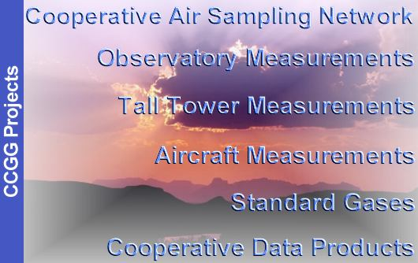

Climate Monitoring & Diagnostics Laboratory |
 Carbon Cycle-Greenhouse Gases U.S. Dept. of Commerce / NOAA / OAR / CMDL / CCGG |
Climate Monitoring & Diagnostics Laboratory |
Carbon Cycle-Greenhouse Gases U.S. Dept. of Commerce / NOAA / OAR / CMDL / CCGG |
|
The use of fossil fuels and practice of deforestation to meet the world's energy demands has lead to increasing concentrations of carbon dioxide and methane in the atmosphere. Both gases absorb terrestrial infrared radiation and have the potential to affect earth's climate. Before policies can be developed to limit the emissions of these gases into the atmosphere, their biogeochemical cycling must be understood. The NOAA CMDL Carbon Cycle Greenhouse Gases group makes ongoing discrete measurements from land and sea surface sites and aircraft, and continuous measurements from baseline observatories and tall towers. These measurements document the spatial and temporal distributions of carbon-cycle gases and provide essential constraints to our understanding of the global carbon cycle. CCGG maintains compressed air standard reference gas for CO2, CH4, CO trace gasses. |
||
 [New] [Data] [Figures] [Observatory Measurements] [Tall Tower Measurements] [Aircraft Measurements] [Standard Gases] [Cooperative Data Products] |
||
| Carbon Cycle -
Greenhouse Gases 325 Broadway R/E/CG1 Boulder, CO 80303 Group Chief: Pieter Tans (303) 497-6678 |